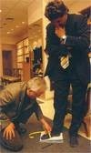
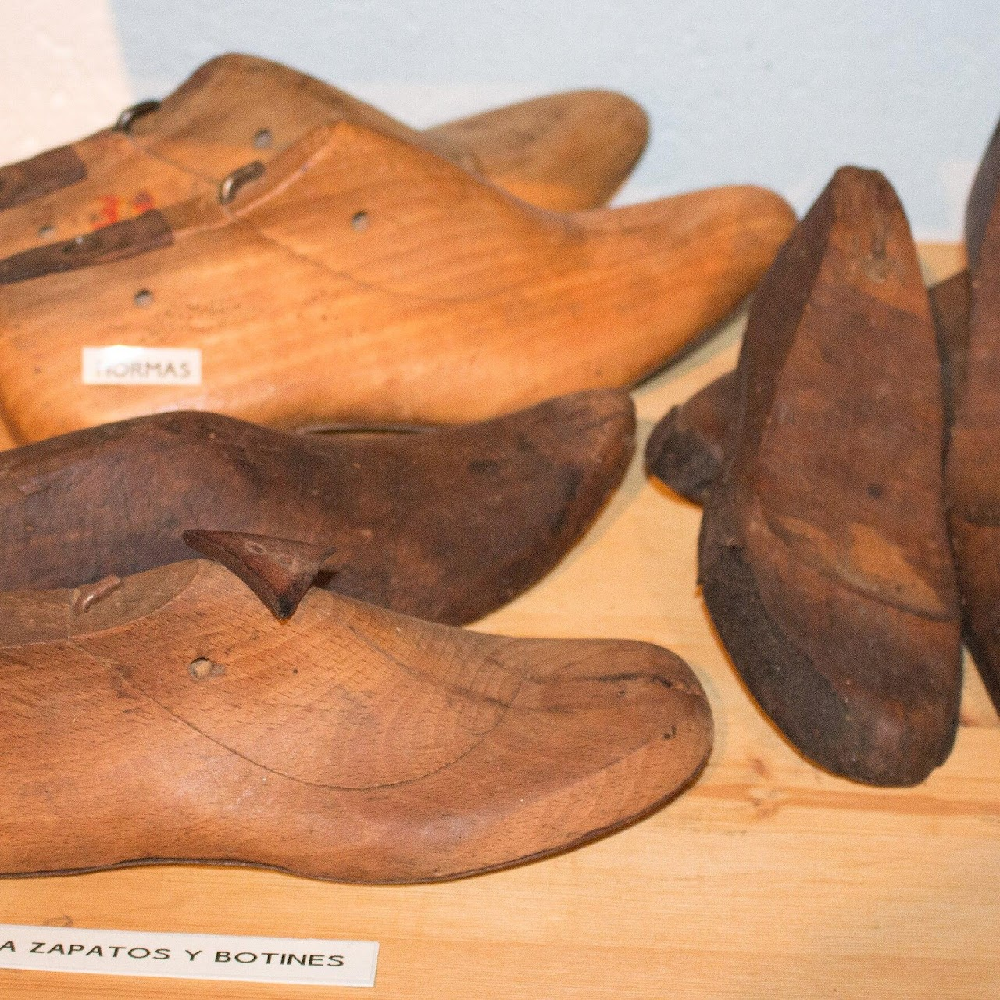
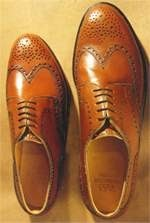
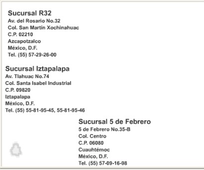

Zapatería Bicentenario
Calzado de calidad para toda la familia desde hace más de 30 años.
Calzado de calidad para toda la familia desde hace más de 30 años.
En esta página encontrarás: nuestra historia, misión, el mundo del zapato, cuidado y catálogo.
Somos una zapatería orgullosamente mexicana 🇲🇽, dedicada a la fabricación y venta de calzado cómodo, duradero y a precios accesibles. Nuestra historia comienza en León, Guanajuato, cuna del calzado.

Nuestra misión es ofrecer calzado de calidad con diseños modernos que brinden comodidad y estilo. Buscamos ser líderes en el mercado nacional e internacional.


Es una industria global con una gran diversidad de productos, desde zapatos deportivos hasta calzado de vestir. En México, la producción de calzado se concentra principalmente en Guanajuato, Jalisco, Estado de México y la Ciudad de México. La industria del calzado abarca desde la producción de materias primas (cuero, telas, etc.) hasta el diseño, fabricación y distribución de los productos terminados.
No existen dos pies que sean exactamente iguales. Por este motivo, a un zapatero solamente le es posible confeccionar zapatos cómodos de las medidas correspondientes cuando dispone de toda la información necesario sobre los dos pies del cliente.
Unos zapatos siempre serán buenos si están hechos de la mejor piel y con una buena parte de trabajo artesanal. Estos criterios son válidos para todos los zapatos, para mocasines y modelos de cerquillo cosido.
La segunda función consiste en reflejar la orientación de la moda y los requisitos estéticos; es decir, mostrar una forma perfecta, como el modelo de zapato elegido Durante los últimos cien años, la moda del calzado masculino no ha sufrido variaciones extremas. Existen unos pocos modelos básicos que se diferencian entre sí por la forma de la puntera, en el corte de la parte superior y en los elementos ornamentales.
Desde el siglo XVIII, en el ramo del calzado se utiliza una unidad propia: el punto. Así pues, para la determinación de la longitud del pie podía utilizarse el punto París, el punto Berlín, el punto Viena, etc. que los maestros de distintas regiones habían fijado a raíz de distintos acuerdos. En cualquier caso, las numeraciones para determinar la longitud del zapato no tuvieron demasiada importancia hasta finales del siglo XIX, cuando empezó a desarrollarse la producción en masa.
La pala de un zapato sólo podrá conservar su suavidad, elasticidad y brillo si recibe los cuidados adecuados. La piel del calzado mal cuidado acaba secándose, quebrándose (principalmente en los lugares donde se flexiona) y resquebrajándose tarde o temprano. Los zapatos mal cuidados tienen una vida relativamente corta. El equipo debe contar como mínimo de un cepillo para quitar el barro, de cerdas de buey, caballo o cerdo; también son muy apreciados los cepillos de fibras de pita, los flexibles tejidos de las hojas de una especie de pita sudamericana. Con las gruesas cerdas de estos cepillos se elimina el barro seco y otros tipos similares de suciedad.
A continuación puedes consultar nuestro catálogo completo en formato Word:
Descargar el catálogo en WordContamos con distribuidores en varias ciudades de México. Si deseas ser parte de nuestra red, contáctanos.
